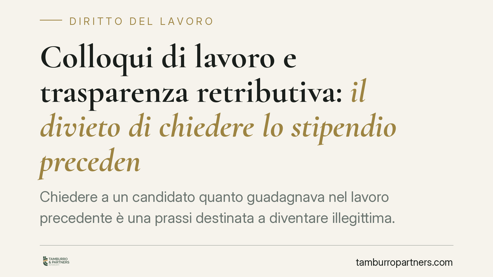

Colloqui di lavoro e trasparenza retributiva: il divieto di chiedere lo stipendio precedente
Chiedere a un candidato quanto guadagnava nel lavoro precedente è una prassi destinata a diventare illegittima. La direttiva europea sulla trasparenza retributiva vieta questa domanda e impone di comunicare in anticipo lo stipendio o la fascia offerta. Il termine di recepimento è fissato al 7 giugno 2026: le imprese hanno tempo per adeguare le procedure di selezione.

Il quadro: la direttiva UE sulla trasparenza retributiva
La fonte di riferimento è la direttiva (UE) 2023/970 del Parlamento europeo e del Consiglio, del 10 maggio 2023, che rafforza l'applicazione del principio della parità di retribuzione tra donne e uomini a parità di lavoro o di lavoro di pari valore.
L'art. 5 della direttiva introduce due obblighi che riguardano direttamente la fase precontrattuale, cioè il momento della selezione:
- il datore di lavoro deve fornire ai candidati informazioni sulla retribuzione iniziale o sulla relativa fascia prevista per la posizione, così da consentire una trattativa informata e trasparente;
- il datore di lavoro non può chiedere ai candidati la retribuzione percepita nei rapporti di lavoro precedenti o in corso.
Il termine per il recepimento negli ordinamenti nazionali è il 7 giugno 2026 (art. 34 della direttiva). Alla data odierna il decreto italiano di recepimento è in corso di adozione: numero, articolato definitivo e data di entrata in vigore non sono ancora confermati e vanno verificati alla pubblicazione in Gazzetta Ufficiale. Il contenuto degli obblighi, tuttavia, discende già dal testo europeo.
Perché la domanda sullo stipendio precedente diventa un problema
La ratio non è formale. La domanda "quanto guadagnavi prima?" tende a perpetuare i divari retributivi: chi partiva da una retribuzione più bassa – spesso per ragioni legate al genere – rischia di vedere quel valore replicato nella nuova offerta. Il legislatore europeo sposta quindi il baricentro dal valore negoziale del singolo al valore oggettivo della posizione.
Si tratta di un principio, non solo di un adempimento. La retribuzione deve ancorarsi a criteri neutri e verificabili legati alla mansione, non allo storico contrattuale del candidato.
L'obiettivo si inserisce nel quadro nazionale della parità di trattamento, già presidiato dal D.lgs. 198/2006 (Codice delle pari opportunità) e, sul piano europeo, dal principio di parità retributiva richiamato dall'art. 3 della direttiva 2023/970.
Cosa cambia per le imprese
Gli obblighi precontrattuali dell'art. 5 – divieto di chiedere lo storico retributivo e trasparenza sulla retribuzione iniziale – non prevedono soglie dimensionali: si applicano a prescindere dal numero di dipendenti. Vale la pena distinguerli da altri obblighi introdotti dalla direttiva, come quelli di reporting sul divario retributivo, che invece scattano per fasce dimensionali dell'impresa.
Per chi seleziona personale il cambiamento è concreto:
- il candidato non è più tenuto a rivelare quanto percepiva prima, e la domanda diventa illegittima;
- l'annuncio o la fase di trattativa devono contenere l'informazione sulla retribuzione o sulla fascia prevista;
- si rovescia la posizione negoziale: è l'impresa a dover dichiarare per prima il valore economico della posizione.
Particolare attenzione va posta quando la selezione è affidata a soggetti esterni – agenzie per il lavoro, società di head hunting, recruiter in outsourcing. Il committente resta il datore di lavoro interessato all'assunzione e ha interesse a che i terzi coinvolti rispettino i medesimi divieti: le clausole contrattuali con i fornitori dovrebbero recepire espressamente questi vincoli.
Cosa fare in concreto
- Rivedere gli annunci di lavoro inserendo la retribuzione o la fascia retributiva prevista per la posizione.
- Eliminare dai moduli di candidatura e dai colloqui ogni domanda relativa allo stipendio percepito in precedenza.
- Formare i selezionatori interni su cosa si può e non si può chiedere durante il colloquio.
- Aggiornare i contratti con agenzie e recruiter esterni, prevedendo il rispetto del divieto e della trasparenza precontrattuale.
- Definire criteri retributivi oggettivi ancorati alla mansione e al suo valore, documentabili in caso di contestazione.
È opportuno avviare la revisione delle procedure di recruiting prima del termine di recepimento, senza attendere la pubblicazione del decreto: gli assetti organizzativi richiedono tempo e i principi europei sono già definiti.
Disclaimer
Contributo informativo a cura di Tamburro & Partners – Avv. Giuseppe Tamburro. Non costituisce parere legale.
Ogni storia di lavoro ha i suoi tempi.
Se gestisci HR e vuoi un confronto su contenzioso, ispezioni o licenziamenti, scrivi allo studio. Ti rispondiamo entro un giorno lavorativo.